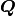
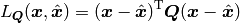

A model in QInfer is a class that describes the probabilities of observing data, given a particular experiment and given a particular set of model parameters. The observation probabilities may be given implicitly or explicitly, in that the class may only allow for sampling observations, rather than finding the a distribution explicitly. In the former case, a model is represented by a subclass of Simulatable, while in the latter, the model is represented by a subclass of Model.
Bases: object
Returns the number of real model parameters admitted by this model.
This property is assumed by inference engines to be constant for the lifetime of a Simulatable instance.
Returns the dtype of an experiment parameter array. For a model with single-parameter control, this will likely be a scalar dtype, such as "float64". More generally, this can be an example of a record type, such as [('time', 'float64'), ('axis', 'uint8')].
This property is assumed by inference engines to be constant for the lifetime of a Model instance.
Returns True if and only if the number of outcomes for each experiment is independent of the experiment being performed.
This property is assumed by inference engines to be constant for the lifetime of a Simulatable instance.
Returns the diagonal of the scale matrix  that relates the scales of each of the model parameters. In particular, the quadratic loss for this Simulatable is defined as:

If a subclass does not explicitly define the scale matrix, it is taken to be the identity matrix of appropriate dimension.
| Returns: | The diagonal elements of . |
|---|---|
| Return type: | ndarray of shape (n_modelparams, ). |
Returns an array of dtype uint describing the number of outcomes for each experiment specified by expparams.
| Parameters: | expparams (numpy.ndarray) – Array of experimental parameters. This array must be of dtype agreeing with the expparams_dtype property. |
|---|
Given a shape (n_models, n_modelparams) array of model parameters, returns a boolean array of shape (n_models) specifying whether each set of model parameters represents is valid under this model.
Given an array of experimental parameters, returns the cost associated with performing each experiment. By default, this cost is constant (one) for every experiment.
| Parameters: | expparams (ndarray of dtype given by expparams_dtype) – An array of experimental parameters for which the cost is to be evaluated. |
|---|---|
| Returns: | An array of costs corresponding to the specified experiments. |
| Return type: | ndarray of dtype float and of the same shape as expparams. |
If a model supports explicit calculation of the likelihood function, then this is represented by subclassing from Model. The likelihood function provided by a subclass is then used to implement Simulatable.simulate_experiment(), so that the primary method to be defined by a Model subclass is Model.likelihood().
Bases: qinfer.abstract_model.Simulatable
Returns True if and only if the model parameters given are valid for this model.
Assuming a two-outcome measurement with probabilities given by the array pr0, returns an array of the form expected to be returned by likelihood method.
| Parameters: |
|
|---|